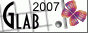

О ПРОЕКТЕ
По-видимому, на странице «О проекте» необходимо рассказать – зачем все это делается? Что ж, ответ довольно прост – я хорошо помню, как сам начинал осваивать ГИС, когда еще Интернет был непозволительной роскошью, с каким трудом добывались крупицы информации, решения и технологии. Та радость, с которой делились своими наработками мои коллеги и друзья, заставляет меня, как минимум, поделиться этим с остальными.
На страницах этого сайта я постараюсь выкладывать материалы, которые могут помочь в освоении MapInfo. Новичкам в ГИС бывает сложно ориентироваться в море информации, зачастую, к тому же, англоязычной. Информации же «начального уровня», как ни печально, весьма немного. Хотя, полагаю, и для «продвинутых» пользователей здесь найдется что-нибудь полезное.
Я буду рад, если кому-то материалы сайта помогут в его работе. И буду признателен, если кто-то решит также поделиться своим опытом со мной.
P.S.
Если по тем или иным соображениям кто-либо захочет установить у себя кнопку этого сайта, то вот код:
<p> <a href="http://glab2007.narod.ru/"> <img style="border:0;width:88px;height:31px" src="http://glab2007.narod.ru/i/b/glab2007.gif" alt="GLab©2007"/> </a> </p>